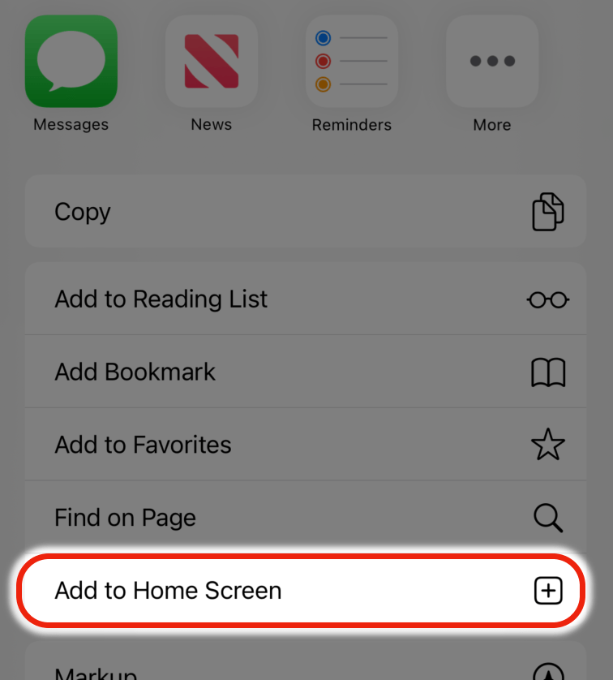

NSMB - Mario Vs Luigi Online
Mobile port by SashaAnt, enable auto run for the best experience.
- A Unity-standalone 2-10 player remake of the Mario vs. Luigi gamemode from the New Super Mario Bros DS download game.
- Includes the 5 default levels (Grassland, Bricks, Castle, Pipes, and Ice), along with a handful of custom levels to battle on! All power-ups are included and remain faithful to their original counterparts, along with the new addition of the Propeller Suit, Ice Flower, and Hammer Suit!
How to Install
- Visit this page from the device you want to install the game on.
- Tap the Share button in the Safari toolbar.
- Select "Add to Home Screen" from the options that appear.
- After adding the game to your home screen, leave Safari and launch the "Mario vs Luigi" app to play the game.

How to play in browser
If you want to play it on a modern HTML5 web browser, click here. This will take you to SashaAnt's original page with web browser support.